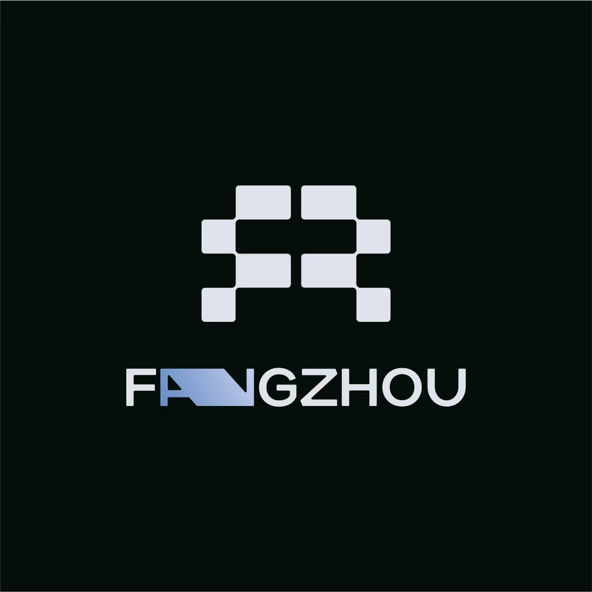

01↗
快速生成 · 初始
描述、类型、模型、规格与预计费用围绕一个创作框。
透明标识与明亮蓝白配色已合入原本地网站，截图按创作流程排列。点击画面可放大，方向键切换。
描述、类型、模型、规格与预计费用围绕一个创作框。
参考缩略图、来源、用途和当前配置说明同时可见。
作品浏览、筛选、搜索、预览与复用入口。
参考与镜头连线、缩放工具及生成输入。性能仍待生产复现。
查看自己的生成记录与状态。当前为演示数据。
增加创建人和全站任务视角；真实服务端权限待接入。
先选择素材，再分配参考用途。
图片、视频切换的统一浮层。
选中项、焦点与浮层材质。
比例、清晰度、数量按需展开。
390 px：参数重排，模型、费用和提交可达。
390 px：规格浮层避开屏幕边界。
视频模型、比例、分辨率、时长与费用保留。
从 logo 的模块图形与冷银蓝出发，银白承载内容，蓝紫负责创作，橙色提示费用。
以真实 logo 和任务关系贯穿整个产品。

使用正式图形与 FANGZHOU 字标，提取冷银蓝与模块几何。
原图组合 · 原比例 · 深色载体
对称的模块图形是识别核心，英文定制字标保持原样。中文“方舟智创”使用界面字形作为辅助名称，不能替代原图中的英文字标。
每种颜色都有工作职责。
Logo 关联色：冷银白 #DFE3EE、桥接蓝 #8A9BC4、深色载体 #03120D。三者用于品牌承载、导航与背景过渡，不替代原有蓝紫橙的业务角色。
主操作 · 当前导航 · 焦点
模型 · 引用关系 · 创作能力
费用提示 · 标记 · 少量强调
正文 · 图标 · 核心信息
输入 · 内容 · 数据承载
浅底搭配深色文字；橙色费用信息使用深琥珀字。不要把 #FF9500 直接作为白底小字。
建议：中性 80% / 蓝 12% / 紫 6% / 橙 2%。这是界面基线，实际比例随任务变化，媒体内容颜色不计入。
| 角色 | 前景 / 背景 | 实际比值 | 目标 | 结果 |
|---|---|---|---|---|
| 正文 | #17283E / #FFFFFF | 14.9:1 | ≥ 4.5:1 | 通过 |
| 次级文字 | #35475E / #FFFFFF | 9.48:1 | ≥ 4.5:1 | 通过 |
| 辅助文字 | #5B6C82 / #F5FAFF | 5.11:1 | ≥ 4.5:1 | 通过 |
| 主按钮文字 | #FFFFFF / #0071E3 | 4.7:1 | ≥ 4.5:1 | 通过 |
| 主按钮悬停 | #FFFFFF / #0064CA | 5.71:1 | ≥ 4.5:1 | 通过 |
| 紫色实底文字 | #FFFFFF / #5E5CE6 | 5.06:1 | ≥ 4.5:1 | 通过 |
| 蓝色选中项 | #005BB7 / #EAF3FF | 5.9:1 | ≥ 4.5:1 | 通过 |
| 紫色模型标签 | #4842BA / #F0EEFF | 6.65:1 | ≥ 4.5:1 | 通过 |
| 橙色费用标签 | #8A4B00 / #FFF3DE | 6.2:1 | ≥ 4.5:1 | 通过 |
| 成功状态 | #167345 / #EAF7EF | 5.33:1 | ≥ 4.5:1 | 通过 |
| 警告状态 | #8A4B00 / #FFF3DE | 6.2:1 | ≥ 4.5:1 | 通过 |
| 失败状态 | #B42332 / #FFF0F1 | 5.88:1 | ≥ 4.5:1 | 通过 |
| 排队状态 | #35475E / #EDF0F5 | 8.3:1 | ≥ 4.5:1 | 通过 |
| 控件边框 | #8591A3 / #FFFFFF | 3.19:1 | ≥ 3:1 | 通过 |
计算针对不透明色对。玻璃与图片背景仍需检查最终合成效果；这不是全产品可访问性通过报告。
中文清楚，模型名完整，数字稳定。
中文不加装饰性字间距；长模型名换行或展开完整名称。金额、时长、时间和进度采用等宽数字。标题用 600 字重，正文 400，控件 500，不依赖未安装的 550 字重。
同类一致，不同层级有不同尺度。
| 导航 / 顶栏 | 224 px / 64 px，业务导航只保留一套。 |
|---|---|
| 内容 / 创作框 | 最大 1200 px / 820 px，按内容居中。 |
| 页面边距 | 桌面 32 px；平板 24 px；手机 16 px。 |
| 交互区域 | 控件高度 40 px；触摸目标至少 44 × 44 px；菜单项 44 px。 |
| 数据行 | 常规 64 px，高密度 56 px；信息可展开，不挤成小字。 |
内容稳定，控制层通透。
输入和任务数据使用实底，保持文字清楚。
内容：不透明银白。导航工具：白色 82% + 16 px 模糊。菜单：白色 97% + 薄边 + 轻阴影。图像详情遮罩使用稳定暗底。
移动画布、低性能设备与减少透明度设置使用实底，停用 blur。视频节点和整个画布不叠动态玻璃；此规则仍需真实项目测量。
层级：内容 0 / 对象工具 20 / 导航 40 / 下拉 100 / 模态 200 / 提示 300。原生 dialog top layer 由浏览器管理，不能仅靠 z-index。
闭合与展开都属于同一体系。
图标统一 24 网格、1.8 px 描边，界面常用 18–20 px；图标按钮保留可访问名称和点击区域。正式工程沿用现有 Lucide / Radix 基础，单个符号不混用多套图标。
主按钮：默认蓝 / 悬停深蓝 / 按下再深一档 / 焦点 2 px 蓝外环 / 禁用浅灰蓝 / 提交中显示状态并防重复。菜单距触发器 8 px、边缘留白 ≥ 12 px、44 px 选项、支持键盘与 Escape 回焦。
颜色、图标和可执行信息一起出现。
选择支持的比例后，可保留描述和参考继续生成。
错误详情与请求 ID 按需展开。只展示服务端真实状态；耗时未知时显示已等待时间。
无报价：显示“待获取报价”。参数改变：旧报价失效。失败：保留描述、模型和参考，给出恢复动作。成功：预览、下载、作为参考、进入画布。结果加载失败与生成失败分开说明。
图形表达输入、引用和镜头关系。
| 参考 / 输出 | 节点名称和类型明确；输入与输出区域独立表达。 |
|---|---|
| 选中节点 | 2 px 紫色外环 + 名称 / 属性区反馈，编辑器靠近对象。 |
| 引用连线 | 常规紫色 1.5 px；选中 2 px；无效引用用虚线 + 文字；命中区 ≥ 12 px。 |
| 缩略图 | 预览保持主体，查看详情使用 contain；视频按需播放。 |
| 画布操作 | 拖动与缩放跟手，位置不叠装饰动画；保存与交互帧率解耦。 |
同一品牌，随任务调整密度。
描述 → 参考来源与用途 → 类型 / 模型 / 规格 → 费用 / 提交。初始态不放大空预览。
可比较的缩略图、类型 / 来源标签，选中后给出复用动作，放大不裁切成品。
镜头目录 + 画布 + 就近控制。工具随状态出现，未选中不展开全部参数。
个人重进度与恢复；管理员提供创建人、模型、时间筛选和分页，角色由服务端确定。
| 视口 | 结构策略 | 验收尺寸 |
|---|---|---|
| 桌面 ≥1200 | 侧栏导航，主内容区，画布最大化。 | 1440 / 1280 |
| 平板 768–1199 | 收窄导航，参数换行，保留模型与费用。 | 1024 / 768 |
| 手机 <768 | 主任务全宽，紧凑导航或导航抽屉；参数按行重排，触摸目标44。 | 390 / 320 |
手机方案为后续接入规范：画布使用全屏并提供镜头列表；管理员表格保留结构，允许表格横向滚动，页面本身不横向溢出。当前旧原型的图标侧栏仍待统一。
表达关系，及时响应操作。
使用 cubic-bezier(.2,.8,.2,1)，可打断、从当前状态继续。画布位置无 easing 拖尾；长任务不用无限装饰动效。减少动效时关闭位移和缩放，保留颜色、图标及文字状态。
从产品入口延续到团队交付。
方舟智创 · 项目交付封面
登录页和提案用完整组合；工作区左上角不写中文名称，使用透明底蓝银适配版，不加深色外框；浅色底上保留字标的蓝银细节。缩略图来自用户作品，不叠默认水印；媒体水印规则另行确认。品牌图案可延展模块节奏，但不重构 logo。未经批准，不改字标、不压扁、不加阴影或伪3D。
设计定义、现有原型和生产能力分别记录。
先提取主题变量，再统一导航、创作框、选择器、参考、任务、画布节点。交互层沿用成熟组件；后台模型能力、报价、计费、权限与状态均以真实接口为准。
来源：用户正式 logo / 已给蓝紫橙色板与工具栏参考 / 交接固定提交 a4a416e。BeatDesign 为两个实际改编组件，Onlook 为布局参考，Media Studio 仅结构参考。素材许可仍需上线核验。